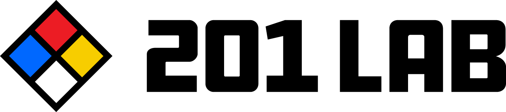

<section class="mat-typography">

<div fxLayout="column" class="main-welcome">
<div fxLayout="row" class="tasks-container"  style="padding-top: 3rem;">

<mat-card fxFlex>
        <mat-card-header fxLayout="row">
          <mat-card-title>
            
            <!--twinlabworks.png designed by Adam Donner-->

          </mat-card-title>
        </mat-card-header>

        <mat-card-content>

                <p>
                    Features of nodebucket:
                </p>
                <ul>
                    <li>nodebucket gives its users an easy to see picture of everything that is on their ToDo list so they won’t lose
                        track of any important task</li>
                    <li>nodebucket allows users to organize their tasks so they always know what they need to be focused on</li>
                    <li>nodebucket shows what tasks have been completed to help show what has been accomplished</li>
                    <li>Nodebucket can be used on any device-phone, tablet, or computer</li>
                </ul>
                <p>
                    nodebucket was developed using the MEAN stack, MongoDB, Express, Angular, and Node.js.
                </p>
        </mat-card-content>
      </mat-card>
</div>
</div>

</section>
